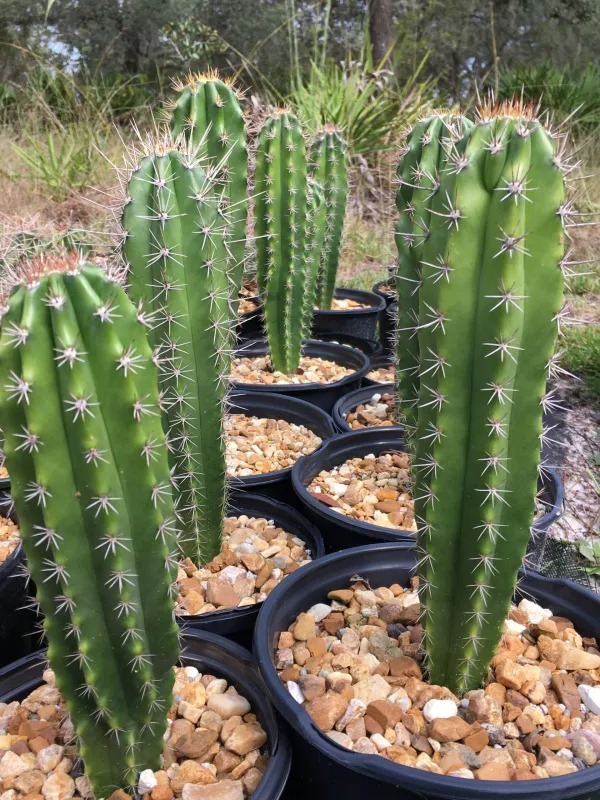
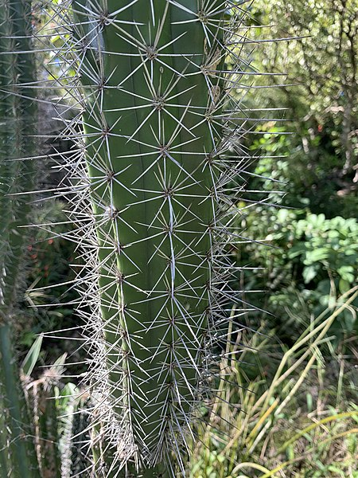
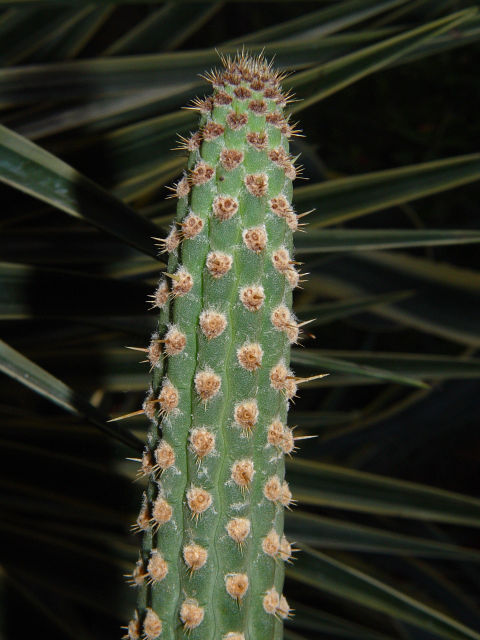
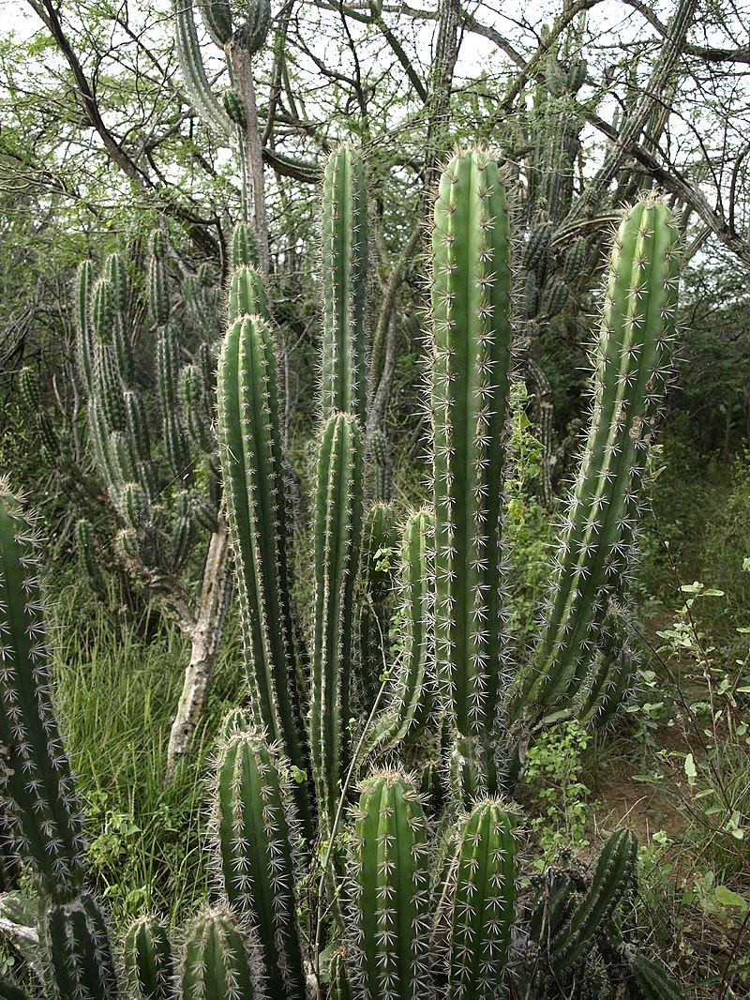

Stenocereus fimbriatus Cactus
Stenocereus fimbriatus: Unveiling Nature's Intricacies through Its Spiraling Thorns.
Introduction:
Stenocereus fimbriatus, also known as Fringed Columnar Cactus, is a member of the cactus family.It is tall and slim columns,furnished with sensitive outers, is is a unique, special and pleasing to the landscape.
Stenocereus fimbriatus can reach heights of up to 15 feet (4.5 meters), which it usually does. Everything around it seem even better by its tall stature.

Physical Characteristics
1. Columnar growth:
The development assumes a towering look. It generates barrel-shaped stems that rise straight up to incredible heights,frequently reaching around to 4.5 meters.
The columns give these cactus its tallness and magical appeareance.Canada, are affected widely by it.
2. Spines:
Like many cactus species, it has spines or thorns that extend down its branches.
These spines protect the cactus from predators and also serve as a form of surface protection.
Spines can be of any size and hue, including brown and gray
3. Fringed Edges:
One of Stenocereus fimbriatus' most distinctive characteristics is its edges, which are fringed or tasseled.
Its cylindrical stems include little, delicate features that resemble fringes or tassels along the ridges.
These fringes distinguish the cactus from other cactus species and give it an appealing and artistic quality.
4. Flowers:
Stenocereus fimbriatus is a lovely shrub with broad, creamy-white or white flowers.
These flowers bloom in the evening and give off a wonderful aroma, which draws the nighttime pollinators, bats and moths, to them.
The blooms provide the leafy columns a wonderful contrast and give the cactus a whiff of ethereal beauty.
5. Stem Texture: Stenocereus fimbriatus stems can have a range of different textures.
It frequently features elevated ridges that run vertically along the length of the stem and are also referred to as ribs or flutes.
These ribs give the cactus its distinctive columnar structure and better overall appearance.

As a part of the Cactaceae family, Acanthocereus tetragonus is an exciting addition to your cacti collection.
It is also known as the Fairy Castle cactus thanks to its multiple branches that are curved to give the
appearance of the towers and minarets of a fairytale castle. The other common names of the cactus are Triangle
cactus, Sword-pear, or wire cactus.
It is also known as the Fairy Castle cactus thanks to its multiple branches that are curved to give the
appearance of the towers and minarets of a fairytale castle. The other common names of the cactus are Triangle
cactus, Sword-pear, or wire cactus.
The good part is that this cactus variety is pretty common. You can get the Acanthocereus tetragonus for
sale from almost all online cactus stores. There is only one known type of fairy castle cactus.
How to take care of Stenocereus fimbriatus cactus:
1. Light:
Full sun is ideal for Stenocereus fimbriatus. Put it somewhere that gets at least 6 to 8 hours of direct sunlight every day. A south-facing window is typically the greatest option if you're growing it inside.
2. Potting:
When planting, pick a container with drainage holes to keep water from pooling at the bottom. When the cactus outgrows its current container, only repot it. Usually, repotting is done every few years.
3. Fertilization:
Feed the cactus with a balanced, diluted cactus or succulent fertilizer in the spring and summer, when it is actively growing. Fertilize roughly once each month, or as directed by the product's label. Avoid fertilizing when the plants are dormant.
4. Pruning:
Only remove dead or damaged growth from the cactus. To shield your hands from the spines, wear gloves.

Temperature required for Stenocereus fimbriatus Cactus:
1. Temperature during the day:
Stenocereus fimbriatus thrives in conditions between 70°F and 90°F (21°C and 32°C). In this temperature range, the cactus may efficiently photosynthesize and develop.
2. Nightime Temperature:
The cactus can tolerate somewhat colder temperatures at night, but extended exposure to temperatures below 50°F (10°C) is not advised since this could stress or kill the plant. Overnight temperatures should ideally remain above 60°F (15°C) for the cactus to remain healthy.
3. Winter dormancy:
In the fall and winter, Stenocereus fimbriatus transitions into a dormant stage. Even while it can tolerate lower temperatures at night, it is still important to keep them at 60°F (15°C) to prevent stress. Reduce watering as well during this time to match the cactus' natural growth cycle.

• Soil Requerments:
1. Well-Draining Mix:
Use a properly-draining cactus or succulent potting combination. These mixes commonly
incorporate substances like sand, perlite, and coarse gravel that allow water to drift via without difficulty,
stopping waterlogged roots.
2. Sand or Perlite:Adding perlite, pumice, or coarse sand to the soil mixture will improve drainage. These components allow water to freely travel through and aid in preventing soil compaction.
3. Organic Matter:
Although Stenocereus fimbriatus does not require a nutrient-rich soil, a modest quantity of well-rotted organic matter can be added to the mix. This can boost nutrient levels slightly without impairing drainage.
4.Drainage holes should be included in the container when planting the cactus there so that any excess water can drain. Root rot and other problems might result from poor drainage.
5. Root Space:
Select a planter that offers the cactus room to expand without growing overly large. The cactus should be placed in a pot that is somewhat bigger than its current root system.
Propagation of the Stenocereus fimbriatus Cactus:
1. Steps in Water Propagation:
Choose a Mature, Healthy Plant: Pick a Stenocereus fimbriatus plant with robust stems that is mature and healthy. There should be no bugs or diseases on the plant.
2. Preparation:
To stop the spread of illnesses, sterilize your cutting equipment by cleaning them with rubbing alcohol or hydrogen peroxide. To use them, allow them to dry.
3. Pick a Stem to Cut:
Pick a stem to cut for propagation. The stem should be in good condition and show no evidence of damage. To make a precise cut, use a sharp knife or pruning shears. Cut a section that is between 10 and 15 cm (4 to 6 inches) long. Before planting, let the cutting dry for a few days to allow the cut end to callus over. In planting, this helps avoid rot.
4. Pick a Stem to Cut:
Pick a stem to cut for propagation. The stem should be in good condition and show no evidence of damage. To make a precise cut, use a sharp knife or pruning shears. Cut a section that is between 10 and 15 cm (4 to 6 inches) long. Before planting, let the cutting dry for a few days to allow the cut end to callus over. In planting, this helps avoid rot.
5. Create the Planting Mix: Create a cactus or succulent soil mixture that drains properly. To improve drainage, you might add perlite or sand. Mix into tiny pots.
6. Create the Planting Mix: Create a cactus or succulent soil mixture that drains properly. To improve drainage, you might add perlite or sand. Mix into tiny pots.
7. Watering: Water the soil lightly after planting to help it settle around the cutting. Don't overwater because too much moisture can lead to deterioration. Do not water the soil in between letting it dry out.
Place the pots in a warm, bright area with indirect sunshine to create the perfect atmosphere. Try to keep the young cuttings out of the sun as they may be sensitive to intense light.
8. Root Formation: Over the next several weeks to months, the cutting will start to produce roots. You can gently tug on the cutting to check for roots by feeling for resistance.
You can transplant a cutting into a little larger pot or its final location once its root system has expanded to the appropriate size. To care for mature Stenocereus fimbriatus plants, follow the instructions.
Cacti must be multiplied over time; however, not all cuttings will germinate. Exercise patience and pay attention to the situation as it arises to increase the likelihood of effective propagation. Remember that seeds are another option for replication, but they often yield slower results than stem cuttings.
Stenocereus fimbriatus, also known as Fringed Columnar Cactus, is a member of the cactus family.It is tall and slim columns,furnished with sensitive outers, is is a unique, special and pleasing to the landscape.
The development assumes a towering look. It generates barrel-shaped stems that rise straight up to incredible heights,frequently reaching around to 4.5 meters. The columns give these cactus its tallness and magical appeareance.Canada, are affected widely by it.
Like many cactus species, it has spines or thorns that extend down its branches. These spines protect the cactus from predators and also serve as a form of surface protection. Spines can be of any size and hue, including brown and gray
One of Stenocereus fimbriatus' most distinctive characteristics is its edges, which are fringed or tasseled. Its cylindrical stems include little, delicate features that resemble fringes or tassels along the ridges. These fringes distinguish the cactus from other cactus species and give it an appealing and artistic quality.
Stenocereus fimbriatus is a lovely shrub with broad, creamy-white or white flowers. These flowers bloom in the evening and give off a wonderful aroma, which draws the nighttime pollinators, bats and moths, to them. The blooms provide the leafy columns a wonderful contrast and give the cactus a whiff of ethereal beauty.
Full sun is ideal for Stenocereus fimbriatus. Put it somewhere that gets at least 6 to 8 hours of direct sunlight every day. A south-facing window is typically the greatest option if you're growing it inside.
When planting, pick a container with drainage holes to keep water from pooling at the bottom. When the cactus outgrows its current container, only repot it. Usually, repotting is done every few years.
Feed the cactus with a balanced, diluted cactus or succulent fertilizer in the spring and summer, when it is actively growing. Fertilize roughly once each month, or as directed by the product's label. Avoid fertilizing when the plants are dormant.
Only remove dead or damaged growth from the cactus. To shield your hands from the spines, wear gloves.
1. Temperature during the day:
Stenocereus fimbriatus thrives in conditions between 70°F and 90°F (21°C and 32°C). In this temperature range, the cactus may efficiently photosynthesize and develop.
2. Nightime Temperature:
The cactus can tolerate somewhat colder temperatures at night, but extended exposure to temperatures below 50°F (10°C) is not advised since this could stress or kill the plant. Overnight temperatures should ideally remain above 60°F (15°C) for the cactus to remain healthy.
3. Winter dormancy:
In the fall and winter, Stenocereus fimbriatus transitions into a dormant stage. Even while it can tolerate lower temperatures at night, it is still important to keep them at 60°F (15°C) to prevent stress. Reduce watering as well during this time to match the cactus' natural growth cycle.
• Soil Requerments:
1. Well-Draining Mix:
Use a properly-draining cactus or succulent potting combination. These mixes commonly
incorporate substances like sand, perlite, and coarse gravel that allow water to drift via without difficulty,
stopping waterlogged roots.
2. Sand or Perlite:Adding perlite, pumice, or coarse sand to the soil mixture will improve drainage. These components allow water to freely travel through and aid in preventing soil compaction.
3. Organic Matter:
Although Stenocereus fimbriatus does not require a nutrient-rich soil, a modest quantity of well-rotted organic matter can be added to the mix. This can boost nutrient levels slightly without impairing drainage.
Although Stenocereus fimbriatus does not require a nutrient-rich soil, a modest quantity of well-rotted organic matter can be added to the mix. This can boost nutrient levels slightly without impairing drainage.
4.Drainage holes should be included in the container when planting the cactus there so that any excess water can drain. Root rot and other problems might result from poor drainage.
5. Root Space:
Select a planter that offers the cactus room to expand without growing overly large. The cactus should be placed in a pot that is somewhat bigger than its current root system.
Propagation of the Stenocereus fimbriatus Cactus:
1. Steps in Water Propagation:
Choose a Mature, Healthy Plant: Pick a Stenocereus fimbriatus plant with robust stems that is mature and healthy. There should be no bugs or diseases on the plant.
2. Preparation:
To stop the spread of illnesses, sterilize your cutting equipment by cleaning them with rubbing alcohol or hydrogen peroxide. To use them, allow them to dry.
3. Pick a Stem to Cut:
Pick a stem to cut for propagation. The stem should be in good condition and show no evidence of damage. To make a precise cut, use a sharp knife or pruning shears. Cut a section that is between 10 and 15 cm (4 to 6 inches) long. Before planting, let the cutting dry for a few days to allow the cut end to callus over. In planting, this helps avoid rot.
4. Pick a Stem to Cut:
Pick a stem to cut for propagation. The stem should be in good condition and show no evidence of damage. To make a precise cut, use a sharp knife or pruning shears. Cut a section that is between 10 and 15 cm (4 to 6 inches) long. Before planting, let the cutting dry for a few days to allow the cut end to callus over. In planting, this helps avoid rot.
Pick a stem to cut for propagation. The stem should be in good condition and show no evidence of damage. To make a precise cut, use a sharp knife or pruning shears. Cut a section that is between 10 and 15 cm (4 to 6 inches) long. Before planting, let the cutting dry for a few days to allow the cut end to callus over. In planting, this helps avoid rot.